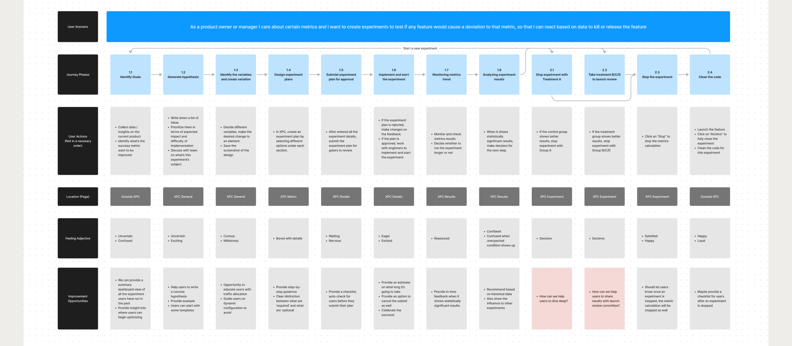

Project Type
UX/UI
Tools
Sketch & Figma
Zeplin
CSS
My Contribution
Research Analysis
User Interviews
UX/UI
End-to-end Points
00. Overview
Redesign the Experiment Center
Experiment Center (XPC) is an intricate web application that enable all internal users at Coupang to run quality experiments. It empowers teams to make informed and timely business decisions based on the experiments’ data.
As the chief designer on the Experiment Platform team, I led the redesign of the user interfaces. From ideation to development, over the course of 12 months I’ve worked alongside with interdisciplinary team members (PO, data scientists, engineers) to craft this platform.
01. Challenge
Different User Types
There are two major types of users using XPC, experienced users who create experiments on a daily base and new users who never created an experiment before.
-
Experienced Users
-
New Users
For the first type of users, they are looking for more advanced features, and they are comfortable about diving deep into the complex datasets.
New users have very little experience in AB testing so creating their first test and monitor/ interpret its data can be quite confusing and imitating. Very often they don’t know where to start.
In order to accommodate both needs and expectations, we were searching to find an optimal balance point between “holding users’ hands” and “let them freely explore”.
02. KICKOFF
Discovering the Dealbreakers
A crucial part of my role was to identify usability issues and pain points in the current experience and discover how each user type can more efficiently and easily operate through their user flows. Collaborated with product owner Luke Seo, we fleshed out our research plan, which included user interviews and surveys.
We gathered detailed feedbacks from users about current AB testing platform, and then established few criterias that will be mainly focused during this redesign project.
-
Scalable Front End
-
Quality Experiments
-
Breaking out into Tabs
-
Better Curation and Sharing
Fast and flexible development. Currently changing and adding features is slow and required a lot of testing.
UX overhaul to for a simpler, guided experiment setup resulting in a 90% first-time approval rate for hypothesis submissions.
Current experiment details page is very cluttered and hard for users to get to results details. We will adopt tabs structure to group related information and functionalities.
Additional input to record learnings and a dedicated page to share the details of the experiment.
Meanwhile I did a competitive analysis about other similar platform’s features, compare and contrast their functionality and accessibility.
03. Mapping
Contents Architecture
After several meetings with PO and data scientists about what are the full weight issues and potential solutions that might solve them. I created a sitemap to map out all the content branches

In order to walk the team through this sitemap, I put up a slide presentation which they can click to dive in, below are some of the screenshots.
04. KEY FEATURES
Main User Flows
Based on the painpoints that were collected from the user interviews, we try to emphsize important stages during each user flow. Promoting their outcomes are expected to increase efficiency as well as guiding new users.

05. BRAINSTORMING
Low-fi Layout Exploration
Because Experiment Center (XPC) curates a great amount of data and information, in order to find out what would be the best approach in terms of presenting the information hierachy, I explored different layout options before jumping into vanilla wireframes.

In the end, after discussion with the team we picked Layout A because we want to utilize the full-width of the page.
06. DESIGN
Vanilla Wireframes
For the first run of wireframing, I mapped out all the possible pages. No color or typefaces’ choices involved yet because I want to focus on the contents’ structure first. This also allows me to disregard constraints to explore the most creative solutions. Below are just few out of hundreds...